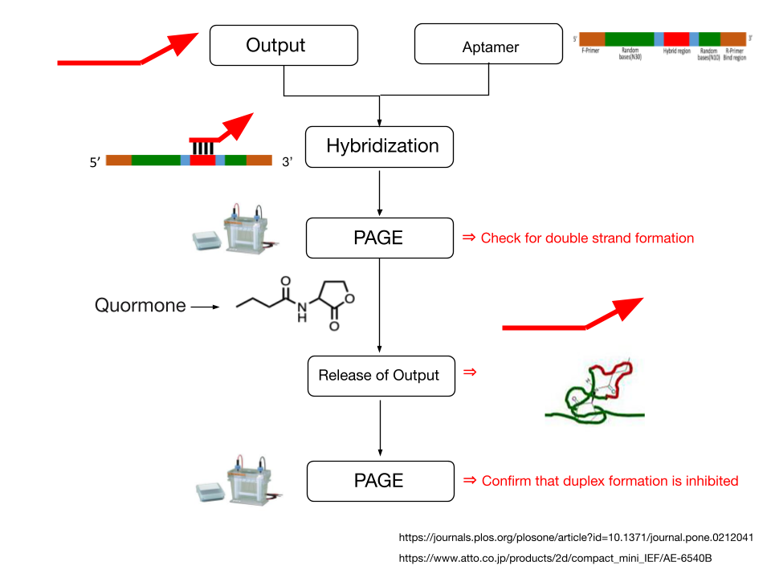
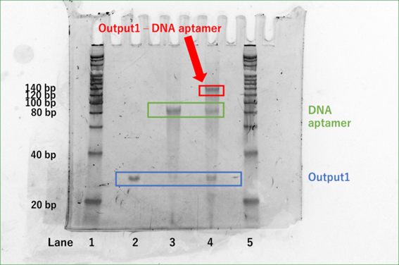
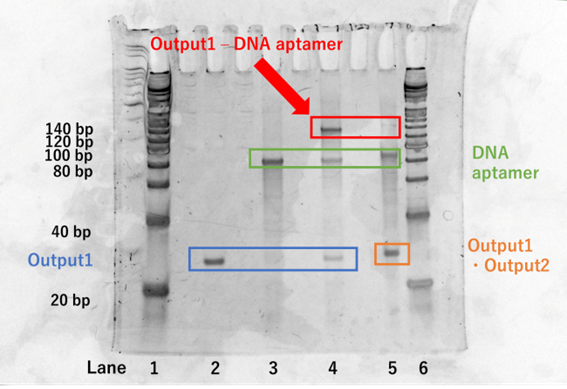

Experiment
Experimental Items
The purpose of this experiment is to create double-stranded DNA that reacts specifically to C4-HSL and dissociates.
1. Hybridization of DNA aptamer (Pool99) + Output1
【Method】
Hybridization of DNA aptamer (Pool99) + Output1
First, DNA Aptamer (Pool99) and Output1 were prepared to 600nM with 1 × TAE/Mg2+. After preparation, DNA Aptamer (Pool99) (20μL) was denatured at 95˚C for 5min and cooled to 4˚C using a PCR thermal cycler. DNA Aptamer (Pool99) (20μL) and Output1 (20μL) were then mixed in a 1 : 1 ratio, and the sample was set in a PCR thermal cycler at 53˚C for 30min, followed by 48˚C for at least 4hr. The mixture was then held at 43˚C for 30min and 38˚C for 4hr.1)
Confirmation of double strand formation by electrophoresis (PAGE)
Polyacrylamide gels were prepared by mixing 10 W/ V. % Acrylamide Bis Mixed Solution (29 : 1) 10mL and initiator (APS 100µL + TEMED 10µL). Then, electrophoresis was performed at 150V, 15mA, 45min using 0.5 × TBE buffer.
【Results and Discussion】
Fig.1 shows the results of Experiment 1.
Fig.1 PAGE analysis
(lane 1: ladder (20bp, 7µL)、lane 2: Output1 (300nM, 7.5µL), lane 3: DNA Aptamer (Pool99) (300nM, 7.5µL), lane 4: Output1 - DNA Aptamer (Pool99) (300nM, 7.5µL), lane 5: ladder (20bp, 7µL))
Fig.1 shows that a single peak between 20bp and 40bp (peak 1) appeared in lane 2. Also, a single peak between 80bp and 100bp (peak 2) appeared in lane 3. In lane 4, three peaks have appeared, peak 1, peak 2, and a peak between 120bp and 140bp (peak 3). Peak 1 and 2 in lane 4 are Output1(32bp) and DNA Aptamer (Pool99) (99bp) that were not hybridized. Since peak 3 is the sum of peak 1 and peak 2, we confirmed the success of hybridization of Output1 and DNA Aptamer (Pool99) .
2. Dissociation of Output1 - DNA Aptamer (Pool99) by C4-HSL
【Method】
Dissociation of DNA aptamer (Pool99) + Output1
C4- HSL (1mg) was prepared to 1mM using DMSO. 600nM Output1 - DNA Aptamer (Pool99) and 1mM C4-HSL were mixed 1 : 1 and reacted for 1hr.
Confirmation of double-strand dissociation by electrophoresis
The polyacrylamide gel was prepared under the same conditions as those described earlier for electrophoresis. Then, electrophoresis was performed at 150V, 15mA, 45min using 0.5 × TBE buffer.
【Results and Discussion】
Fig.2 shows the results of Experiment 2
Fig.2 PAGE analysis
(lane 1: ladder (20bp, 7µL), lane 2: 300nM Output1 (7.5µL), lane 3: 300nM DNA Aptamer (Pool99) (7.5µL), lane 4: 300nM Output1 - DNA Aptamer (Pool99) (7.5µL), lane 5: 600nM Output1 - DNA Aptamer (Pool99) plus 1mM C4-HSL, lane 6: ladder (20bp, 7 μL))
Comparing lane 4 and lane 5, it was observed that the 120bp-140bp peak was considerably faded in lane 5. Since peaks similar to those of Output1 (32bp) and DNA Aptamer (99bp) were observed, we consider that double-stranded DNA of Output1 - DNA Aptamer (Pool99) (131bp) dissociated into single-stranded DNA of Output1(32bp) and DNA Aptamer(99bp). It can also be seen that the Output1 (32bp) and DNA Aptamer (Pool99) peaks of lane 5 are darker in color compared to lane 4. This confirms the dissociation of Output1 - DNA Aptamer (Pool99) (131bp) into Output2 and DNA Aptamer. This confirmed the release of Output2. The hybridized double-stranded DNA of Output1 - DNA Aptamer (Pool99) was found to function as an aptamer for C4-HSL.
Conclusion
Single-stranded DNA, Output1 (32bp), DNA Aptamer (Pool99, 99bp) was hybridized to form double-stranded DNA (131bp). Then, when C4-HSL was added to the double-stranded DNA, the release of Output2 was confirmed. In conclusion, DNA aptamer - output1 (131bp) was found to function as an aptamer of C4-HSL.